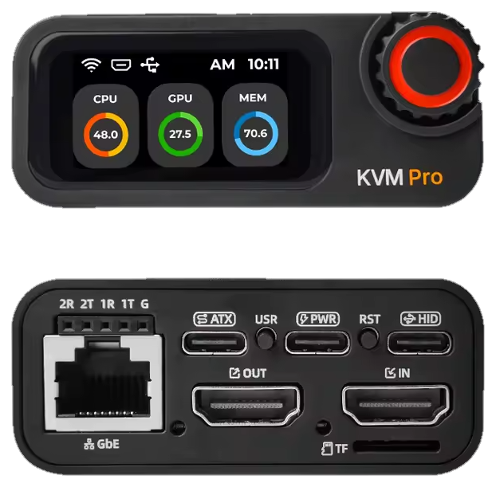

Meet CEC Support
Your PC.
Your PC.
In good hands.
Real help. Useful tools. Your KVMs.
One Windows app.
Free app · Windows 10 & 11
Getting help is this simpleIllustrated preview
My computer
Your Support Number
418 552 903
Share it with your technician.
Your private connection starts here.
A
Alex wants to connectView and control your screen
Confirm your technician's nameAlex
You're in control.
A
Alex Connected · ControllingAccess remaining: 2h 43m
Forget“Forget” disconnects and removes access.
The ToolboxLess digging.
Less digging.
More fixing.
Windows repairs. Hardware checks.
The tools you need, ready to go.
Repairs
System File CheckerRepair system files
Repair Windows imageDISM
Scan system driveOnline disk check
Flush DNS cacheClear stale addresses
Windows tools
Task ManagerSee what's running
Device ManagerHardware & drivers
Event ViewerWindows event logs
System InformationYour PC at a glance
Advanced
Crucible TestsHardware stress tests
Disk ManagementDrives & partitions
Registry EditorAdvanced configuration
Reliability MonitorStability history
See the work happen.
System File CheckerScanning · example
68%Verification in progress
Keep the results.Download your repair logs.
CEC KVM managementSmall box.
Small box.
Big backup plan.
Manage it in the app.
Reach your PC, even before Windows starts.

CEC KVM ProMy CEC KVM Pro
Attached to this computer
OpenWi-FiUpdate
KVM Support Number729 184 506
A
Alex wants to connectVerify code 351 827
Decline
Claim & attachSet up Wi-Fi*Update firmwareApprove support
*On Wi-Fi equipped models. Support controls require current KVM firmware.
Find your fit.
Shop CEC KVMsLet's get you sorted.
Download for WindowsFree app · Windows 10 & 11